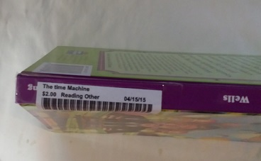
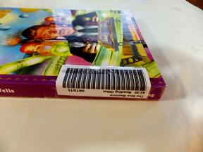
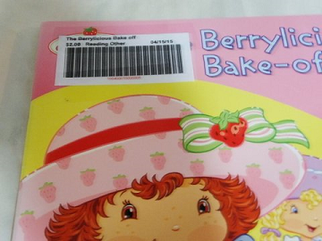

| Title | Barcode | Type | Date Added | Price | Discount | |
|---|---|---|---|---|---|---|
| {{row.title}} | {{row.barcode}} | {{row.subject}} | {{row.dateAdded | date}} | {{row.originalPrice | currency}} | {{row.discounted | true_false}} |
You must have a PDF reader installed.
The barcodes will be delivered in a PDF document called "barcodes.pdf"
Once the pdf is saved on your computer or device, open and print the barcodes.
Barcodes may be printed on regular printer paper.
If you close this tab and logout this page will no longer show your added items. To print barcodes which were added but are not displayed go to the 'View Items' tab, select the items to print, and press 'Print Barcodes. If you continue to experience problems please contact playcreatedisver@gmail.com or come to the center at 1200 Jordan Ln. St. 8, Huntsville, AL
Please leave part of the barcode un-taped. We need to be able to scan the barcode.
If possible place the 'Title', 'Date', and 'Subject' on the back of the binding to make it easier for customers to see your item.
 If it is not possible to place it on the binding. Then place the barcode on the front cover in the top left-hand corner.
 < />